1. Overview
meshTerm is an SSH client for iOS and iPadOS. It connects to remote servers over standard SSH and offers an optional persistent-session mode called Roam that keeps your shell alive on the server even when your phone reconnects, backgrounds, or switches networks.
Beyond the terminal, meshTerm includes:
- Multiple concurrent sessions per host, with attach modes for sharing or watching.
- A predictive-echo overlay that makes typing feel native on slow links.
- A browseable view of the host's shell history, plus a chip strip of inline suggestions.
- An SFTP file browser that integrates with the iOS Files app.
- A customisable macro bar and a searchable Snippet Vault.
- Native Tailscale integration for keyless SSH on your Tailnet.
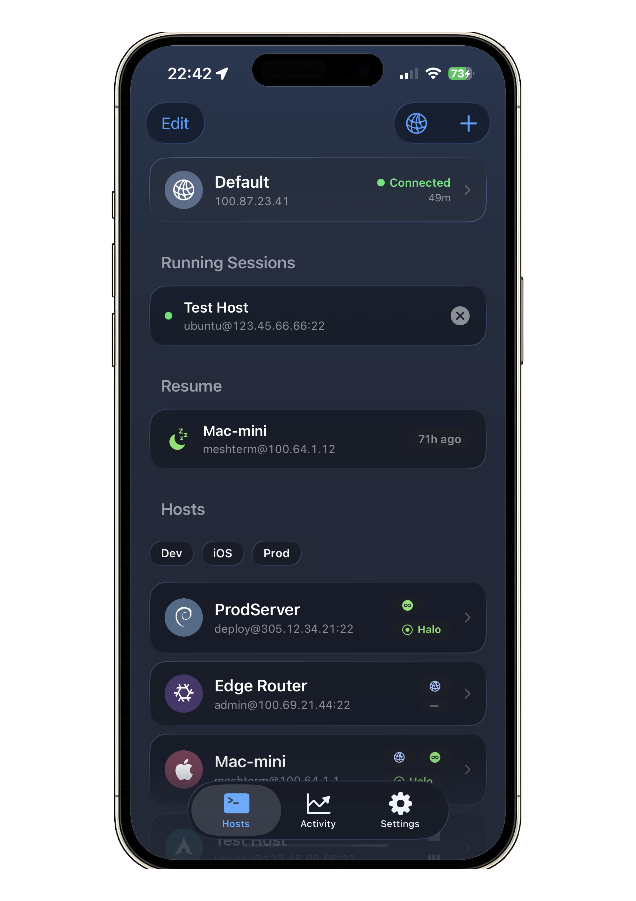
2. What's new in 2.0
If you're upgrading from meshTerm 1.x, here's what changed:
- Roam mode — opt-in per host. Pair a small open-source daemon on your server and your shell becomes durable across reconnects, app suspension, and device switches.
- Named multi-attach sessions — open
dev,logs,testson the same host and switch between them in one tap. Attach exclusively, read-only watch, or passively tail. - Predictive echo — keystrokes mirror locally as you type, then reconcile with the daemon's actual echo. Adapts to the network latency.
- History browse — pull up a sheet of the host's shell history, search and send a command in one tap.
- TUI return-to-prompt pill — a floating pill that recognises Claude Code or Codex CLI and offers a one-tap jump back to the live prompt.
- More key types — Ed25519, ECDSA P-256, P-384, P-521.
- Hardware buttons — bind Volume Up/Down (short and long press) to terminal actions.
- ⌘F scrollback search, host import/export from
~/.ssh/config, host tags and filter chips, eight curated themes. - Pro tier simplified — every feature is free; Pro only lifts the 1-host / 1-session cap to unlimited.
3. Getting started
Adding your first host
- Open meshTerm. On first launch you'll see the Hosts tab, empty.
- Tap + in the top right.
- Fill in the connection details:
- Label — a friendly name (e.g.
demo). - Hostname or IP — the address of your server.
- Port — defaults to 22.
- Username — your account on the server.
- Label — a friendly name (e.g.
- Pick an authentication method — password, SSH key, or (if the server runs Tailscale SSH) Tailscale.
- Optionally pick a Connection method — plain SSH or Roam. You can toggle this later from Edit Host.
- Tap Save.
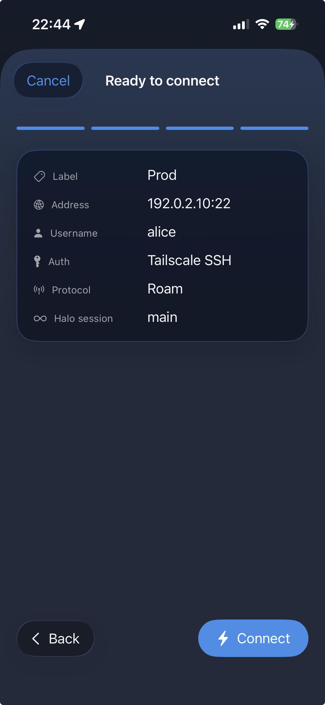
Connecting
Tap any host in the list to open a terminal session. On first connect to a new host, meshTerm asks you to verify its host-key fingerprint (see Known Hosts) — tap Trust & Connect to proceed.
4. Managing hosts
Editing a host
Long-press a host card or open its detail screen, then tap Edit. The editor groups settings into Connection, Authentication, Protocol (plain SSH or Roam), Session, TUI Detection, Tags, Operating System, and Environment Variables.
Deleting a host
Swipe a host card left and tap Delete.
Tags & filter chips
Tag hosts in the editor's Tags section (comma-separated, e.g. prod, web). A chip row at the top of the Hosts tab lets you filter by tag.
Host import / export
Settings → Hosts gives you two buttons:
- Import from .ssh/config — pick a host you can already SSH to. meshTerm reads its
~/.ssh/configover SSH and shows a checklist of entries to mirror. Imported hosts start in password mode with an empty password — set credentials in the editor before connecting. - Export to ssh_config — emits a standard OpenSSH config file you can drop into your dotfiles or AirDrop to a laptop. Roam-enabled hosts are exported as plain SSH (the Roam protocol is meshTerm-specific).
Distro / OS icons
Each host card shows a small icon for its operating system — Ubuntu, Debian, Fedora, CentOS / Rocky / Alma, Arch, openSUSE, NixOS, Linux Mint, Gentoo, elementary OS, Void, Solus, Zorin, deepin, macOS (Apple logo), FreeBSD, Android, AIX, and GNU/Hurd. The icon is tinted with the host's per-card hue. Choose the OS in Edit Host → Operating System; Unknown falls back to the generic Linux icon and shows the host's initials as a monogram.
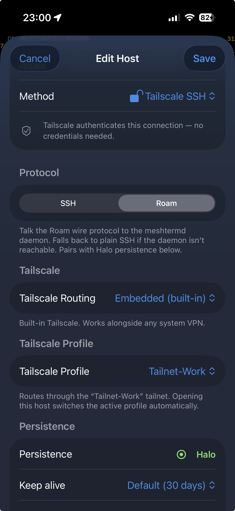
Installing the daemon on a host
The first time you tap Connect on a Roam-enabled host that doesn't already have the daemon, a Set Up Roam sheet appears. The sheet runs a six-stage install pipeline:
- Probing — meshTerm runs a few read-only commands over SSH to detect the platform (Linux distro family, macOS, BSD), the architecture, and where to install the binary.
- Downloading — fetches the signed daemon binary and the companion mtctl CLI from the project's GitHub Releases. Progress is shown as a single bar covering both files.
- Verifying — verifies the release's minisign signature against keys built into the app, then checks each binary's SHA-256 against the signed checksum file. If anything fails, the install aborts with a clear error and the binaries are never uploaded.
- Uploading — SFTPs the verified binaries into
~/.local/bin/on your host and marks them executable. - Installing service — sets up the right supervisor for the platform:
- Linux with systemd → a user-level systemd unit, optionally with linger enabled so the daemon survives a logout.
- macOS → a per-user launchd agent.
- Hosts where neither is available → a
nohup-supervised fallback. The sheet tells you the system is on the fallback path.
meshtermdandmtctlfrom any SSH session. - Smoke test — a four-check verification: the binary runs, the daemon responds, your login shell can find it on PATH, and the mtctl CLI is in place. Each check is shown as a row in the sheet. If a check fails, you get an inline Retry Checks button (cheap re-run) and a Full Reinstall button (escalation).
On success, the sheet shows the supervisor that was set up. On Linux hosts, you'll also see a distro-tailored firewall instruction for the UDP port the daemon uses — copy the one line and run it in a shell to open the port for inbound connections.
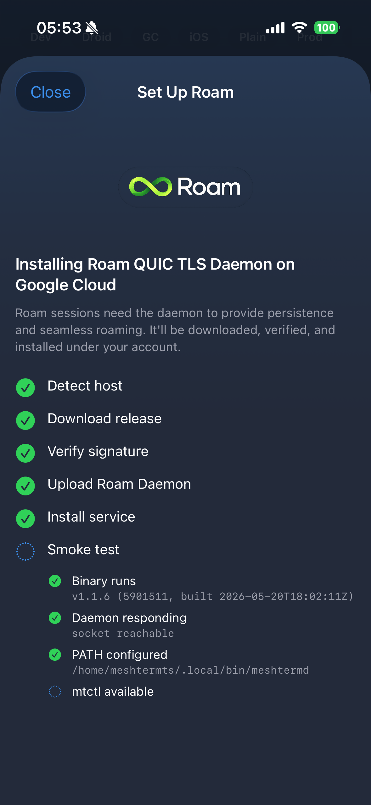
Updating the daemon
When meshTerm needs a newer daemon than the one on the host, the host's editor shows a Daemon update available banner with the installed and available versions. Tap Update now and the sheet drives a self-update — the daemon swaps itself out via atomic rename so the running process isn't interrupted, then restarts via its supervisor.
Reinstalling or recovering
Open the host's detail screen for a Reinstall button. Reinstall stops the running daemon, removes the binary, re-runs the full install pipeline, and brings the supervisor back. Your pairing state and cert are preserved, so reinstall doesn't require re-trusting the host.
If the install fails
Each stage has its own failure message and a copyable manual command you can paste into a shell to run the same step yourself. Common causes:
- Probing failed — the SSH connection itself isn't working, or the user account doesn't have a writable home directory.
- Verification failed — extremely rare; means the downloaded files didn't match the signed checksum. Re-run; if it persists, file a report.
- Service install failed — most often systemd-user can't talk to its bus because the user isn't lingering. The sheet surfaces the exact next step.
Multiple named sessions per host
Each Roam host can hold any number of named sessions: dev, logs, tests, whatever you want. Tap the host and a picker appears showing the existing sessions plus a + New entry. Tap a session to attach; tap + New to start a fresh one.
Manage sessions from the picker:
- Rename — long-press a row.
- Kill — swipe a row left and tap Kill. Confirmation required.
If a host only has one session, meshTerm skips the picker and attaches directly. If it has none, a fresh session is spawned and you connect to it.
Default session and pinning
In Edit Host → Roam Persistence:
- Default Session — pick which named session the host opens by default. None uses your most recently attached one.
- Always open this session — pins the host directly to the default session, skipping the picker. The picker is still available via long-press → Sessions….
- Persist across daemon restarts — when on, the session's scrollback is snapshotted to disk so it survives if the daemon restarts (e.g. after a self-update or host reboot).
Keep-alive (idle timeout)
Pick how long the daemon should hold a Roam session when no client is attached. Options: 1 hour, 1 day, 7 days, 30 days, or Never (kept until the daemon restarts or you kill it). The default is the daemon's own default (30 days).
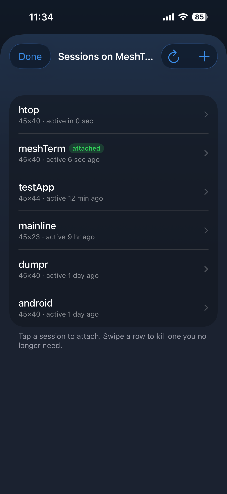
Attach modes
When you join a Roam session, meshTerm uses one of three roles:
- Exclusive (default) — you receive output, you send keystrokes, you own the terminal size. If someone else attaches exclusively, you're handed off to read-only.
- Read-only — you see everything but your keystrokes are dropped at the daemon. Useful for watching a colleague drive, or for a second device tailing along.
- Passive — a quiet tail. Same as read-only but invisible to the other clients' "who else is attached" indicators. Used by the
mtctl tailcommand.
Any number of read-only watchers can coexist with a single exclusive driver. The session label in the bar shows your role.
Desktop CLI: mtctl 2.0
The Roam daemon ships with a small companion command-line tool called mtctl, installed on your host as part of Set Up Roam. Use it from any SSH session on the host (or from a laptop with ssh user@host mtctl …) to manage sessions without opening the iOS app.
Subcommands:
mtctl list— enumerate sessions on this host (id, name, idle time, attached clients).mtctl session-info <name>— detail for one session, including geometry and idle state.mtctl status— daemon health snapshot.mtctl search <regex> <session>— grep a session's scrollback.mtctl doctor— diagnostic checks for daemon, supervisor unit, and lingering.mtctl tail <session>— passively attach to live output. No input, no replay; just a tail.mtctl new --name <name>— create a new named session without attaching to it. Useful for pre-creating a session before opening the app, or for cron jobs.mtctl attach <session>— attach to a session as the local terminal. Detach with~.on a fresh line.mtctl kill <session>— reap a session.mtctl rename <session> <new-name>— rename a session. Buffer and active attaches are unaffected.mtctl update— check for and apply a signed self-update from the project's GitHub Releases.mtctl restart— cycle the daemon via its supervisor. In-flight sessions survive the restart.mtctl uninstall— remove the mtctl binary.
Authentication uses your normal SSH config — ~/.ssh/config, ssh-agent and keys all work. mtctl invokes the system ssh binary, so anything that works for ssh user@host works here too.
--host user@host to pick a target, or reads $MTCTL_HOST, or falls back to ~/.config/mtctl/host.
7. Authentication
Password
Enter the password when adding or editing the host. Passwords are stored in the iOS Keychain.
SSH key
Pick a saved SSH key from the host editor. The private key never leaves your device — meshTerm signs the authentication challenge locally and sends only the public key to the server. See SSH keys.
Tailscale SSH
For servers on your Tailnet with Tailscale SSH enabled, no password or key is required. Tailscale authenticates the connection at the network layer using your device's identity. See the Tailscale Setup Guide.
8. SSH keys
Manage keys in Settings → SSH Keys.
Supported key types
- Ed25519 (recommended default).
- ECDSA on NIST curves P-256, P-384, P-521.
RSA keys aren't supported in 2.0; the importer will tell you if you paste one.
Generating a new key
- Settings → SSH Keys → Add Key.
- Pick a type and enter a label (e.g. "Work iPhone").
- Tap Generate. meshTerm creates the key pair, saves the private half in the iOS Keychain, and shows the public key in OpenSSH format.
- If you have saved hosts, an Install on a Host section appears immediately. Pick a host, tap Install Key, and meshTerm appends the public key to
~/.ssh/authorized_keyson that server.
Importing an existing key
- Settings → SSH Keys → Add Key → Import.
- Paste the full OpenSSH-format private key (including the BEGIN and END lines).
- If the key is passphrase-protected, enter the passphrase. meshTerm decrypts it on import and stores the seed in the Keychain — there's no second prompt at connect time.
- Tap Import.
Copying a public key
Tap the copy icon next to a key to copy the OpenSSH public key to your clipboard. Paste it into ~/.ssh/authorized_keys on any server you want passwordless access to.
Deleting a key
Swipe a key left and tap Delete. The private key is permanently removed from the Keychain. Hosts using that key will fail to authenticate until you reassign one.
Where keys live
- Private keys are stored in the iOS Keychain, marked
WhenUnlockedThisDeviceOnly— they don't back up to iCloud or transfer to other devices. - Public keys are stored alongside the host record for display purposes.
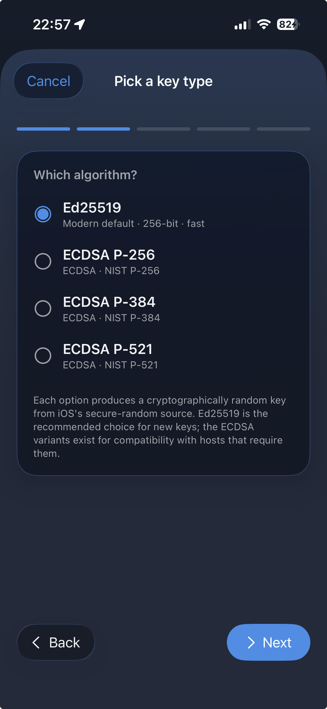
9. Tailscale
meshTerm has a built-in Tailscale networking stack — no separate Tailscale app required. Add your Tailnet credentials and meshTerm connects to your devices directly over WireGuard. SSH, SFTP, Roam, and all auxiliary connections route through the encrypted Tailscale tunnel natively.
Setting up Tailscale
- Go to login.tailscale.com → Settings → Keys.
- Click Generate auth key. Enable Reusable so the key survives app restarts. Optionally enable Ephemeral so the node auto-removes from your Tailnet when meshTerm isn't running.
- Copy the auth key and paste it into Settings → Tailscale → Auth Key in meshTerm.
- Generate a read-only API token on the same page and paste it into Settings → Tailscale → API Token. This lets meshTerm browse your Tailnet devices.
- Tap the globe icon in the host list to browse your Tailnet and add devices in a tap.
The embedded Tailscale node starts automatically when you open the app. You can see its status (connected, IP addresses) in Settings → Tailscale.
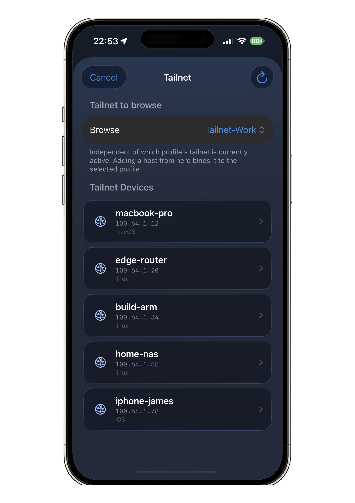
Tailscale SSH
Devices on your Tailnet with Tailscale SSH enabled connect without passwords or keys — Tailscale authenticates the connection at the network layer using your device's identity. Set the host's authentication method to Tailscale SSH in the host editor.

Auth keys
To authenticate the embedded Tailscale node, meshTerm uses a Tailscale auth key. Generate one at login.tailscale.com → Settings → Keys:
- Click Generate auth key.
- Enable Reusable so the key survives app restarts.
- Optionally enable Ephemeral so the node auto-removes from your Tailnet when meshTerm isn't running.
- Copy the key and paste it into Settings → Tailscale → Auth Key in meshTerm.
The auth key is stored in the iOS Keychain. meshTerm uses it to join your Tailnet on each launch — no browser login required.
10. Keyboard
meshTerm has three on-screen keyboard modes. Switch between them with the toggle on the accessory row, or swipe between them.
iOS keyboard
The standard iOS keyboard with a meshTerm accessory bar above it. Use this for plain text input, especially when iOS features like autocorrect or text-replacement come in handy.
Secondary keyboard
A full custom keyboard tailored to the terminal. Two function rows give you direct access to F-keys, navigation, modifiers, and a customisable top row of your most-used keys.
Minimised
A slim bar at the bottom edge of the screen. Hands the rest of the screen back to the terminal for reading long output (logs, man pages, build output). Tap the bar to expand back to one of the full modes; tap a single key on the bar to send it.
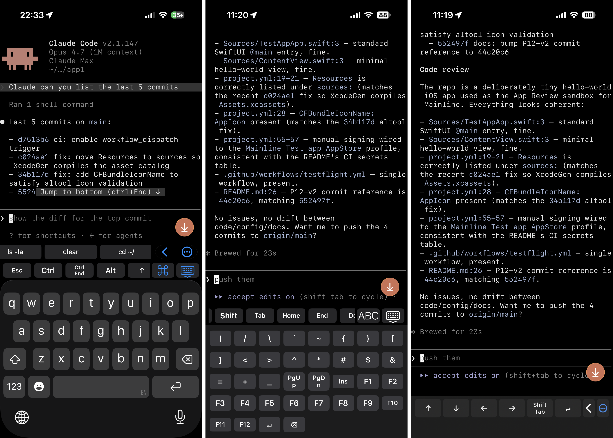
demo and switch through the three modes for each shot.
Drop into images/v2-keyboard-modes.png.
Customising the layouts
- Settings → Keyboard → Keyboard Layout — reorder the secondary keyboard's top row and move keys to or from a drawer.
- Settings → Keyboard → Minimized Row — pick which keys appear on the minimised bar.
- Left-Handed Chrome — mirrors every bottom-edge control to the leading side of the screen.
- Open Sessions Minimised — sessions start in minimised mode by default.
- Button Size — Stepper to scale the secondary keyboard's button height.
Hardware buttons
Settings → Keyboard → Hardware Buttons lets you bind the device's Volume Up and Volume Down to terminal actions, with separate short-press and long-press slots. Available actions: nothing, the four arrow keys, Backspace, Tab, Escape, Ctrl-C, and show/hide keyboard.
When enabled, the volume rocker fires the bound action instead of changing system volume. The intercept pauses automatically when an external keyboard is attached or the app is in the background.
External keyboards
Connect a Magic Keyboard, Smart Folio, or any Bluetooth keyboard and the on-screen accessory bar hides automatically. Disconnect and it returns. While an external keyboard is attached, the following shortcuts are available:
| Shortcut | Action |
|---|---|
| ⌘ T | New session |
| ⌘ K | Close current session |
| ⌘ 1 – ⌘ 9 | Jump to tab N |
| ⌘ [ / ⌘ ] | Previous / next tab |
| ⌘ F | Open scrollback search |
11. Predictions & history 2.0
Predictive echo overlay
When you're typing at a shell prompt, meshTerm mirrors your keystrokes on screen immediately and then reconciles them with the echo that comes back from the server. On a slow link, typing feels native — you see the letters appear as you type, not after a 200 ms round-trip.
The overlay arms itself when meshTerm sees a shell prompt (recognised by the trailing prompt character: $, #, >, or %) and disarms when an alt-screen TUI like vim, htop, or less takes the screen. On Roam hosts, the daemon also reports the live state of the shell's echo flag so meshTerm knows authoritatively whether predictions are safe.
If a prediction doesn't match what the shell actually echoed, the overlay rolls back automatically — you'll see a brief flicker as the mirrored characters are erased and the real ones drawn.
History browse
Pull up the keyboard's history panel to see the host's recent shell history in a sheet. Search across commands and tap one to send it to the active session — the panel closes and the command runs.
The history is fetched live from the host's own ~/.bash_history or ~/.zsh_history over the SSH connection. Nothing is stored locally; what you see is what the shell actually ran.
Prediction chip strip
As you type, a strip of matching commands from the host's shell history appears above the keyboard. Tap a chip to commit the rest of that command without finishing the keystrokes. The chip strip is purely a fast path on top of the history sheet — it doesn't surface snippets, macros, or anything else.

demo at a shell prompt. The user has typed
git st (just two characters); the chip strip above the keyboard should show
history matches like git status, git stash, etc.
Setup: ensure ~/.bash_history on the host has a few git commands in it; type the partial command in the app.
Drop into images/v2-predictions.png.
12. TUI return-to-prompt pill 2.0
When a full-screen terminal app (TUI) like Claude Code or Codex CLI is running, scrolling up to look at earlier output normally means the prompt scrolls off the bottom of the screen. The TUI return-to-prompt pill is a small floating button that surfaces in those situations and jumps you straight back to the live prompt with one tap.
Three styles, picked automatically by what's running:
- Claude Code — brand-orange pill with a white icon. Sends Ctrl+End to jump back to Claude's live prompt.
- Codex CLI — white pill with a black icon. Sends Ctrl+T to toggle the Codex transcript pager.
- Generic TUI — blue pill. Sends Ctrl+End, which works in most alt-screen TUIs and pagers.
Detection runs off the terminal title set by the app, so it's lightweight and accurate. There's no process inspection or byte-stream fingerprinting.
Per-host override
Edit Host → TUI Detection lets you change the behaviour per host:
- Auto — detect from the title (default).
- Claude Code — force the Claude pill on this host even if the title detection fails (some custom zsh prompts overwrite the title).
- Codex CLI — force the Codex pill.
- Off — suppress the pill on this host entirely.
Master kill switch
Settings → Terminal has a master toggle that disables the TUI pill across every host. The pill is on by default.
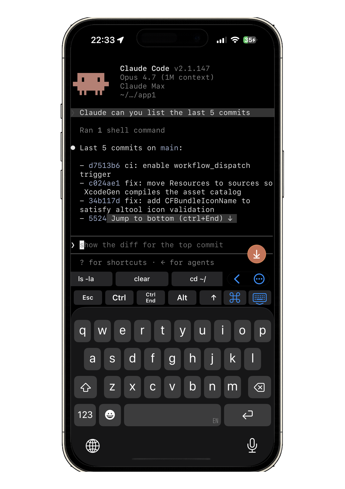
13. Snippet Vault
The Snippet Vault is a searchable library of terminal commands you can send to the active session in one tap. Open it from the terminal toolbar.
Default snippets
meshTerm ships with two folders of pre-loaded snippets:
- Linux — common admin commands like
ls -lah,df -h,ss -tuln,systemctl status. - OpenClaw — commands for the OpenClaw toolkit.
Using a snippet
Tap any snippet to send the command text to the terminal. The Vault closes automatically.
Adding snippets
- Tap + in the Snippet Vault toolbar.
- Enter a title and the command text.
- Optionally pick a folder.
- Tap Save.
Secret snippets
When adding a snippet, mark it as Secret to back its command text with the iOS Keychain instead of plain storage. Optionally require Face ID, Touch ID, or your device passcode each time the snippet fires — useful for sudo passwords, API tokens, or anything you don't want appearing in a list of commands.
Folders & search
Tap New Folder to organise. The search bar at the top of the Vault searches across titles, command text, and tags.
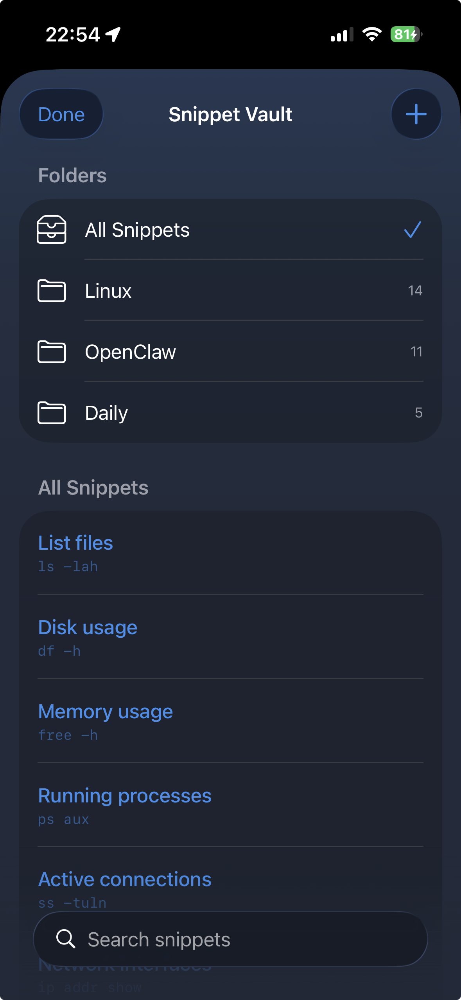
14. Macro bar
The macro bar is a scrollable row of one-tap commands above the keyboard, available in every session. Tap a macro to send its command followed by Return.
Editing macros
Open Settings → Keyboard → Macros:
- Add a macro — a short label (what shows on the bar) and the command text.
- Edit by tapping a row.
- Reorder by dragging.
- Delete by swiping.
- Restore defaults to bring back the built-in starter set.
Hiding the macro bar
Settings → Keyboard → Show Macros turns the row off entirely if you'd rather have the screen real estate back.
Secret macros
Like secret snippets, macros can be marked secret and gated by Face ID. Useful for fast-fire credentials without the macro text appearing in the bar.
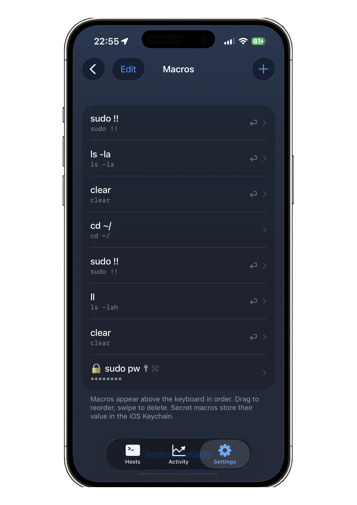
15. SFTP file browser
The SFTP browser moves files on and off your servers without leaving meshTerm. It runs over the same SSH transport as your terminal sessions — no additional credentials, no third-party cloud.
Opening the browser
- From the host detail screen, tap Browse files.
- meshTerm opens an SFTP channel over the existing SSH connection and shows the home directory.
Navigating
- Tap a folder to enter it; tap Back in the navigation bar to go up.
- Pull down to refresh.
- The current path is shown in the title bar.
Downloading
- Tap a file to download. A progress indicator shows bytes transferred.
- When the download completes, the iOS Files share sheet appears — pick iCloud Drive, On My iPhone, or any Files-compatible provider.
Uploading
- Tap Upload File in the browser toolbar.
- Pick one or more files from the iOS Files sheet.
- meshTerm uploads them to the current remote directory.
File operations
Long-press a file or folder for options:
- Rename — enter a new name.
- Delete — confirm and the file or folder is removed. Non-empty folders aren't deleted in one pass — empty them first.
- New Folder (toolbar) — create a directory in the current path.
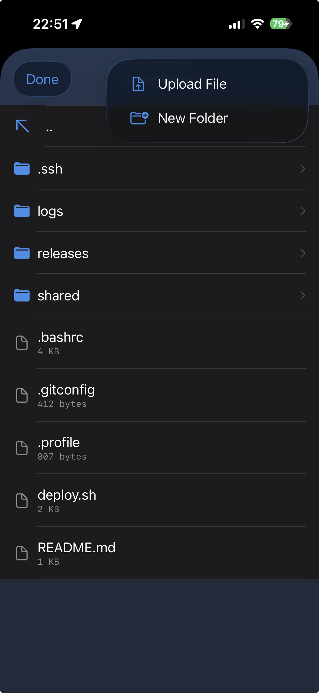
16. Scrollback search 2.0
Press ⌘ F (or tap the magnifier in the terminal toolbar) to open the search bar at the bottom of the terminal. Type to find matches in the visible scrollback; a running match count shows how many hits.
- Up / Down arrows — step between matches.
- Smart Case — case-insensitive unless your query contains an uppercase letter.
- Done — close the search bar and return to the live prompt.
The scrollback is capped at 5,000 lines by default. On Roam hosts you can search server-side with mtctl search for matches beyond the local cap.
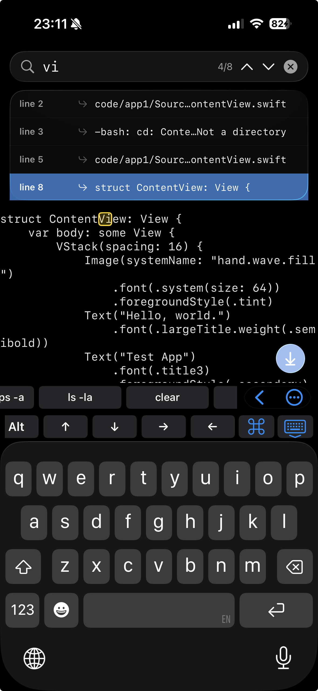
17. Themes
Settings → Appearance → Theme lets you pick from eight curated themes. Each theme drives the terminal palette, the app accent, and the per-host monogram tints together.
- Default Dark
- Default Light
- Solarized Dark
- Solarized Light
- Gruvbox
- Dracula
- Nord
- Tomorrow Night
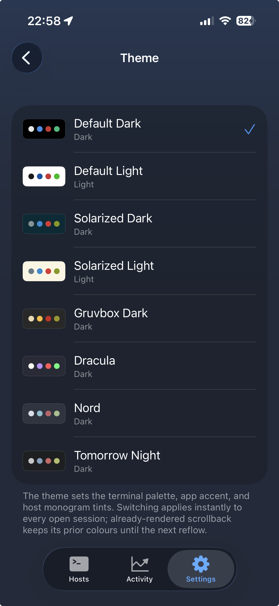
18. Security & App Lock
Known Hosts (TOFU)
meshTerm uses Trust On First Use for host-key verification. The first time you connect to a host, the app shows the server's host-key fingerprint and asks you to confirm. Subsequent connects check the fingerprint silently. If it changes (server rebuilt, key rotated, or something more sinister), the connection is blocked with a warning.
Manage trusted fingerprints in Settings → Security → Known Hosts. Swipe an entry left to delete it. If a server's key legitimately changed, delete the old entry and reconnect to accept the new fingerprint.
App Lock
Settings → Security → App Lock requires Face ID, Touch ID, or your device passcode to reopen meshTerm. Pick one of:
- Off
- Immediately — lock the moment the app backgrounds.
- After 30 seconds / 1 minute / 5 minutes — short app switches pass through.
Cold launch always requires unlock if App Lock is on.
Credential storage
Everything sensitive lives in the iOS Keychain:
- SSH private keys (Ed25519, ECDSA).
- SSH passwords.
- Tailscale API tokens.
- Secret snippets and secret macros.
Nothing sensitive is written to iCloud backup, UserDefaults, or the filesystem in plaintext.
19. Settings reference
A quick map of the Settings tab.
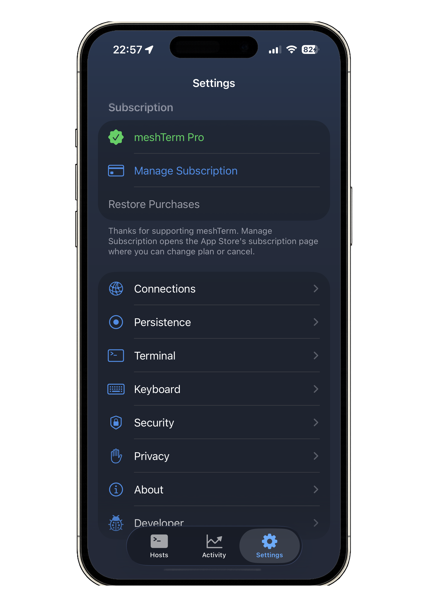
- Subscription — current Pro state and upgrade buttons.
- Appearance — theme picker.
- Terminal — font size, scrollback options, TUI pill master toggle.
- Keyboard — Keyboard Layout, Minimized Row, Left-Handed Chrome, Open Sessions Minimised, Tap-for-Keyboard Reminder, Hardware Buttons, Button Size, Show Macros, Macros editor.
- Connections — default persistence and default Roam idle timeout for newly added hosts.
- SSH Keys — generate, import, copy, delete.
- Hosts — import from
.ssh/config, export tossh_config. - Security — App Lock and Known Hosts.
- Tailscale — API Token, Auth Key, embedded node status.
- Privacy — clear local connection history.
- About — version, Privacy Policy, EULA.
20. meshTerm Pro
Every feature in the app is available in the free tier. The only limit is on concurrent surface area:
| Free | Pro | |
|---|---|---|
| Saved hosts | 1 | Unlimited |
| Concurrent sessions | 1 | Unlimited |
| Roam, predictive echo, history browse, TUI pill, wedge recovery | Yes | Yes |
| SSH key auth (Ed25519, ECDSA), key generation / import / install | Yes | Yes |
| Tailscale SSH and Tailnet device browsing | Yes | Yes |
| Snippet Vault (including secret snippets) | Yes | Yes |
| Macro bar (including secret macros) | Yes | Yes |
| SFTP file browser | Yes | Yes |
| Themes, scrollback search, host import/export, tags | Yes | Yes |
| App Lock | Yes | Yes |
Subscribing
Tap Upgrade in Settings or on the host-limit / session-limit prompt. Pro is available as monthly or annual; the annual plan is the better value. Free trials, when offered, apply on the first qualifying purchase per Apple ID.
Restoring purchases
Tap Restore Purchases in Settings if you reinstall the app or switch devices.
Cancelling
Manage or cancel a subscription via iOS Settings → Apple ID → Subscriptions, or via the Subscriptions row inside the App Store app.
21. Troubleshooting
Connection
"Could not resolve [hostname]"
- Check the hostname is spelled correctly.
- Check your device has a working internet connection.
- If using a local hostname (e.g.
home-server.local), ensure you're on the same network.
"Could not connect"
- Verify the server is reachable and SSH is running (default port 22).
- If you're on a local network address, grant meshTerm Local Network permission in iOS Settings → Privacy & Security.
- Firewalls and NATs can drop idle SSH; set
ClientAliveIntervalon the server if drops are frequent.
Connection hangs at "Connecting…"
- Check your network.
- If connecting via Tailscale, ensure the Tailscale app is open and connected.
- Try toggling Tailscale off and on.
Authentication
SSH key auth fails silently
- Confirm the public key is in
~/.ssh/authorized_keyson the server. - The
~/.sshdirectory needs permissions700and~/.ssh/authorized_keysneeds600. - Check
sshd_configon the server hasPubkeyAuthentication yes.
"Unsupported key type"
meshTerm 2.0 accepts Ed25519 and ECDSA (P-256, P-384, P-521). RSA keys aren't supported. Generate a new Ed25519 key in the app, or convert: ssh-keygen -t ed25519.
Roam
Install fails at "Verifying"
Very rare. Means the downloaded binary didn't match the signed checksum. Retry once; if it persists, your network is corrupting downloads (an aggressive proxy?) — try a different network, or fall back to plain SSH for that host.
Install fails at "Installing service" on Linux
The most common cause is systemd-user not being able to talk to its session bus, usually because the user isn't lingering. The sheet surfaces the exact remediation: run sudo loginctl enable-linger <username> on the host and try the install again. If linger can't be enabled, the install drops to a nohup-supervised fallback and tells you so.
"PATH configured" smoke check fails
Means meshTerm's PATH addition didn't land in your shell's rc file (some custom shells aren't covered: bash, zsh, fish, and POSIX ~/.profile are). Add export PATH="$HOME/.local/bin:$PATH" to your shell config manually and re-run the smoke checks.
Daemon update fails with ETXTBSY
Shouldn't happen — the self-update path uses atomic rename. If you see it, use Reinstall from the host detail screen instead. Reinstall stops the daemon first, which ends any active sessions; save your work before you tap it.
"Daemon firewall port" instructions
The install sheet's success state shows a distro-specific one-liner to open the daemon's UDP port (default 51820). If you skip it, the daemon will work for SSH-tunnelled attaches but direct attaches over the network won't reach it.
Roam silently fell back to plain SSH
If the daemon is unreachable at connect time, meshTerm falls back to a plain SSH session and shows an orange banner above the terminal so the drop isn't silent. Tap the banner for the underlying error. Common causes: the daemon isn't running on the host (run mtctl status or check via SSH), or the firewall port isn't open.
Tailscale
"Enter your Tailscale API token in Settings first."
You opened the Tailnet browser without an API token configured. Go to Settings → Tailscale → API Token and paste one in. See the Tailscale Setup Guide.
"Invalid or expired token."
Tailscale API tokens expire. Generate a new one at login.tailscale.com and paste it into Settings → Tailscale.
Tailnet devices missing from the browser
- Only authorised devices appear. Check your Tailnet's device-authorisation settings.
- Confirm the API token was generated for the correct Tailnet.
- Pull to refresh.
Security warnings
Host key mismatch
The server's host key has changed since you last connected. This can mean a legitimate change (server rebuilt, keys rotated) or something more suspicious. If you're confident the change is legitimate:
- Settings → Security → Known Hosts.
- Find the entry and swipe to delete.
- Reconnect; you'll be asked to trust the new fingerprint.
If you're not sure, do not reconnect. Investigate the server directly first.
App Lock
"meshTerm requires a device passcode."
App Lock can't be enabled without a device passcode. Set one in iOS Settings → Face ID & Passcode, then return to meshTerm.
SFTP
"SFTP subsystem not available"
The server doesn't have the SFTP subsystem enabled. In OpenSSH, ensure /etc/ssh/sshd_config contains Subsystem sftp /usr/lib/openssh/sftp-server (the exact path varies by distro) and restart sshd.
Permission denied on rename / delete / mkdir
Your account needs write permission on the target directory. Some SFTP servers reject cross-filesystem renames — keep the target in the same directory.
Purchases
"Purchase could not be verified."
There was a problem verifying with the App Store.
- Check your internet connection.
- Try Restore Purchases in Settings.
- If the issue persists, contact Apple Support via the App Store.
meshTerm is developed by James Betchley. For support, contact meshterm@gmail.com.